Maslow surfaces nearby charities the moment someone indicates what kind of help they need — food, shelter, clothing — and gives charities a direct channel to the people looking for them.
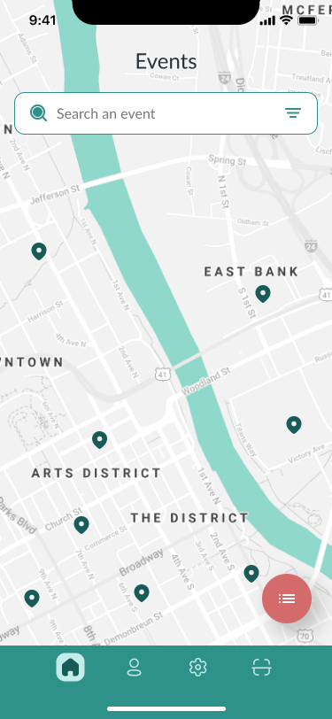
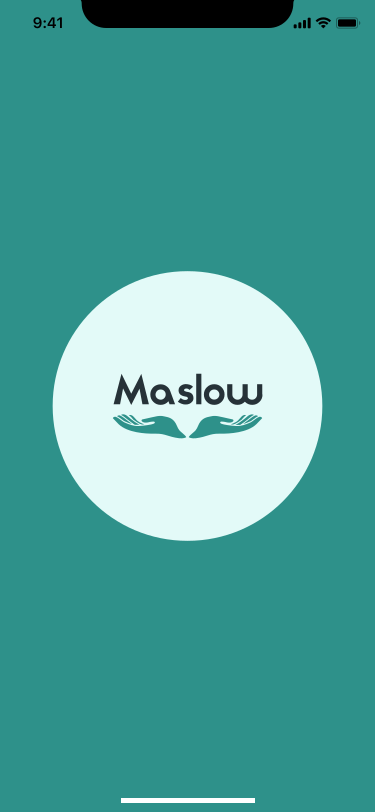
People who need help rarely know which local organization can provide it. A search for "food assistance near me" turns into a maze of hotlines, outdated flyers, and word of mouth — slow and often humbling at the exact moment someone needs speed and dignity.
Maslow acts as a directory, locator, and engagement layer between the two groups — charities register the services they offer and where, and the app routes a user straight to the nearest source of help.
Maslow is a two-sided product — someone looking for help, and an organization trying to be found. Every flow decision traced back to one of these two people.
"I don't want to make five phone calls to find out where to bring my kids for a meal tonight."
"We show up every week — the problem is nobody outside our regulars knows we're here."
Before any screen was drawn, the product's structure was mapped, validated with a card-sorting exercise, and stress-tested as a flow — so visual design started on solid ground.
Information Architecture
The experience was grouped around five pillars, keeping most tasks reachable within one or two taps of Home.
User Flow
Designed to get a first-time user from "I need help" to "I found a nearby service" in as few steps as possible.
Card Sorting
Run across five categories to confirm the IA matched real mental models — it validated that users separated "finding an event" from "checking in at one," which shaped two distinct flows.
Every screen in the core journey was blocked out in grayscale first, with annotations documenting intended behavior before a single color or icon was decided.
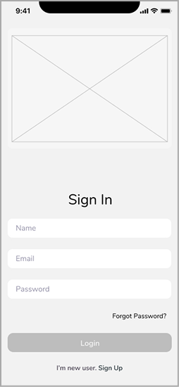
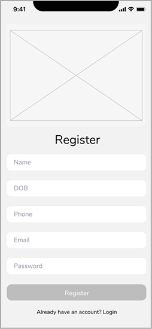
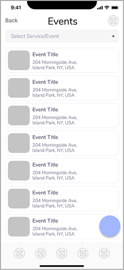
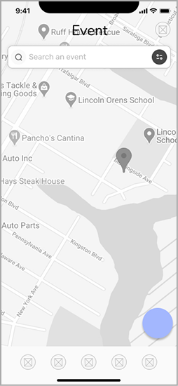
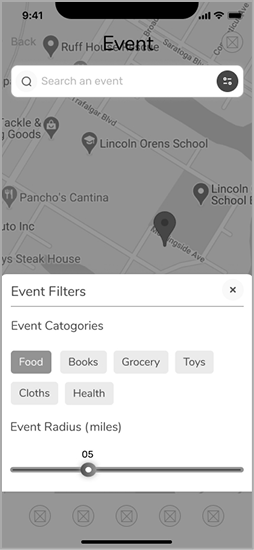
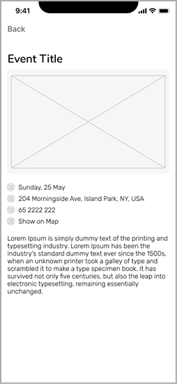
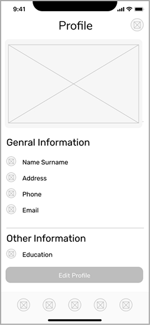
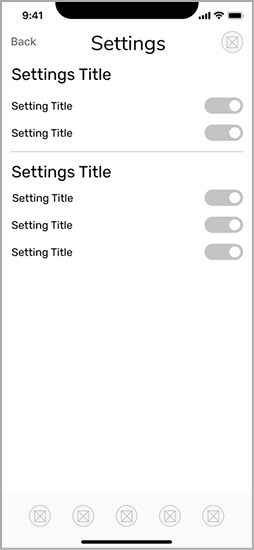
The palette pairs a trustworthy teal — associated with care and support — with a warm coral accent, keeping the interface approachable for users who may be in a vulnerable moment.
Typography — Lato
Color Palette
High-fidelity screens from the real build, grouped by the flows they belong to.
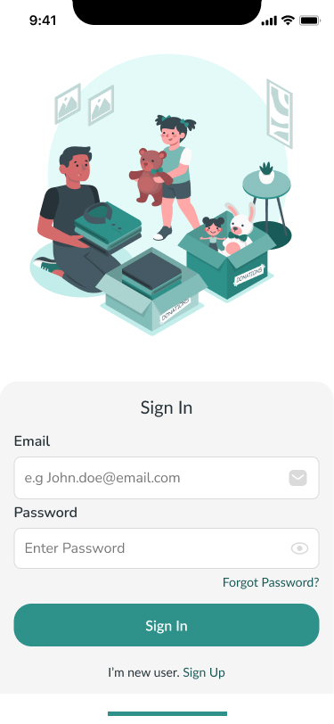
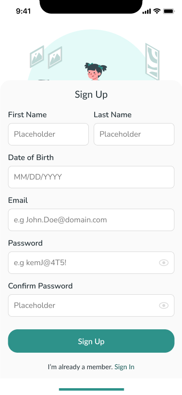
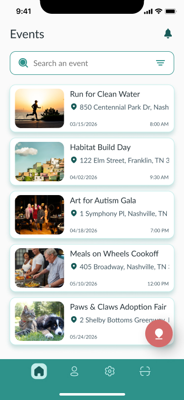
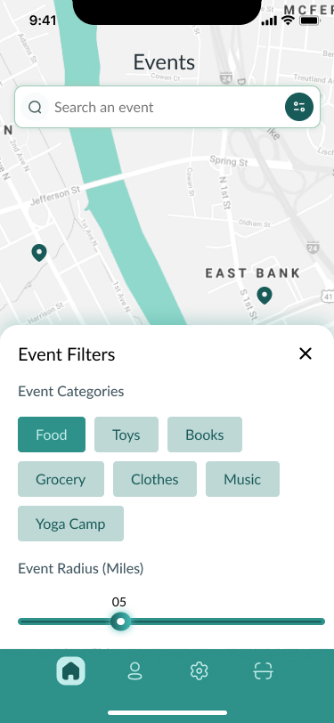
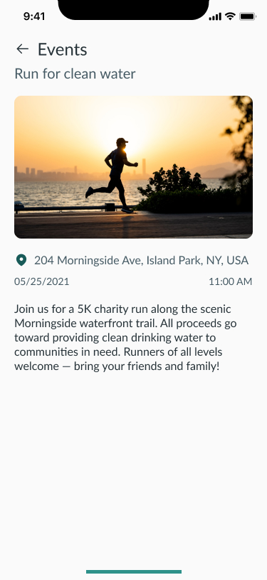
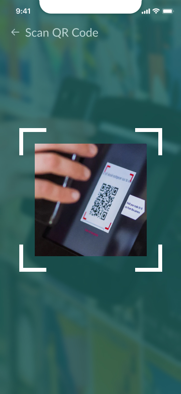
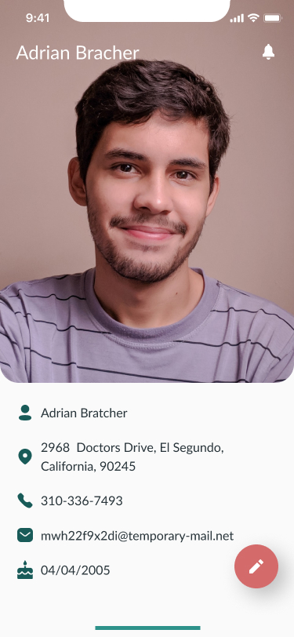
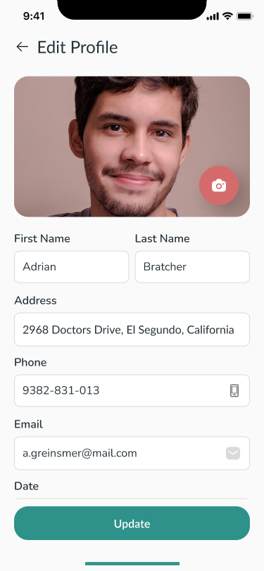
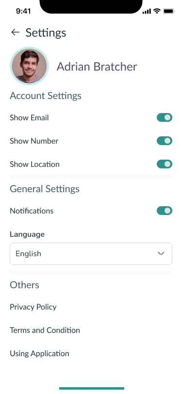
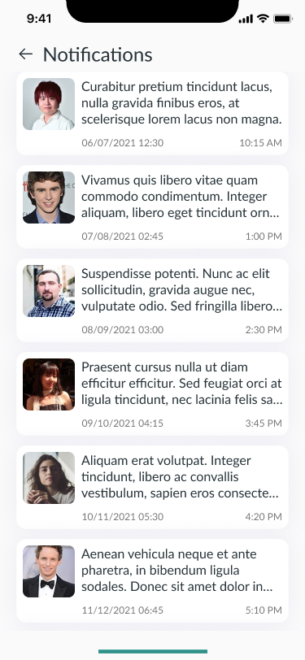
Information architecture and user flow defined where things live. Card sorting validated how users group them. Wireframes tested how the flow feels. The visual design system gave the product a warm, trustworthy identity.
The result is a clear, low-friction path connecting someone in need directly to the charity best equipped to help them — and a direct channel for charities to reach the people they exist to serve.